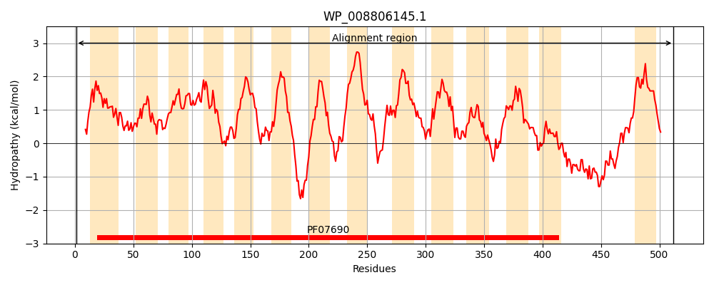
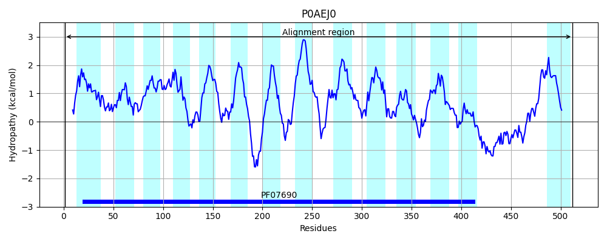
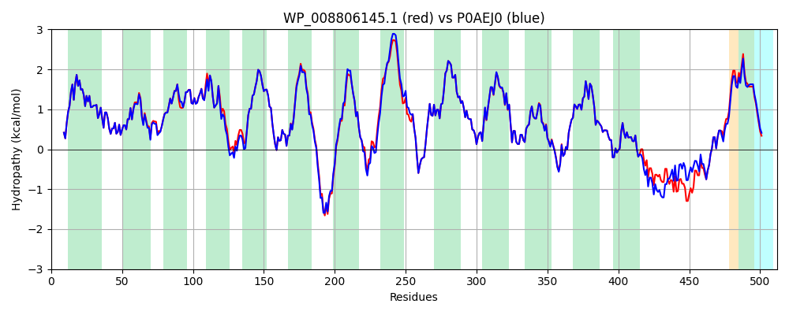

Hit Accession: P0AEJ0
Hit TCID: 2.A.1.3.2
Hit Description: gnl|BL_ORD_ID|8782 gnl|TC-DB|P0AEJ0|2.A.1.3.2 Multidrug resistance protein B - Escherichia coli.
Mach Len: 512
e:0.000000
Query TMS Count : 14
Hit TMS Count: 14
TMS-Overlap Score: 13.300000
Predicted Substrates:CHEBI:8829;rhodamine 6G, CHEBI:23614;deoxycholate, CHEBI:3259;CCCP, CHEBI:7456;nalidixic acid, CHEBI:4864;17beta-estradiol, CHEBI:8453;progesterone
BLAST Alignment:
Score: 2528 , Bit scores: 978 bits, E-value: 0.0e+00, Alignment length: 512, Percentage identity: 94
Query: 1 MQQQKPLEGAQLVIMTIALSLATFMQVLDSTIANVAIPTIAGNLGSSLSQGTWVITSFGVANAISIPITGWLAKRVGEVKLFVWSTVAFAIASWACGVSNSLTMLIFFRVIQGIVAGPLIPLSQSLLLSNYPPAKRSIALALWSMTVIVAPICGPILGGYISDNYHWGWIFFINVPIGIAVVIMTLQTLRGRETRTEQRRIDGVGLALLIIGIGSLQVMLDRGKELDWFASNEIIILTIVAVVAISFLIVWELTDDNPIVDLSLFKSRNFTIGCLCISLAYMLYFGAIVLLPQLLQEVYGYTATWAGLASAPVGVIPVILSPIIGRFAHKLDMRRLVTFSFIMYAVCFYWRAWTFEPGMDFGASAWPQFIQGFAVACFFMPLTTITLSGLPPERLAAASSLSNFTRTLAGSIGTSITTTMWTNREALHHAQLTESVTPFNPNAQQMYDQLQGMGMTQQQASGWIAQQITNQGLIISANEIFWVSAGIFILLLSLVWFARPPFSAGGGGGGAH 512
MQQQKPLEGAQLVIMTIALSLATFMQVLDSTIANVAIPTIAGNLGSSLSQGTWVITSFGVANAISIP+TGWLAKRVGEVKLF+WST+AFAIASWACGVS+SL MLIFFRVIQGIVAGPLIPLSQSLLL+NYPPAKRSIALALWSMTVIVAPICGPILGGYISDNYHWGWIFFINVPIG+AVV+MTLQTLRGRETRTE+RRID VGLALL+IGIGSLQ+MLDRGKELDWF+S EIIILT+VAVVAI FLIVWELTDDNPIVDLSLFKSRNFTIGCLCISLAYMLYFGAIVLLPQLLQEVYGYTATWAGLASAPVG+IPVILSPIIGRFAHKLDMRRLVTFSFIMYAVCFYWRA+TFEPGMDFGASAWPQFIQGFAVACFFMPLTTITLSGLPPERLAAASSLSNFTRTLAGSIGTSITTTMWTNRE++HHAQLTESV PFNPNAQ MY QL+G+GMTQQQASGWIAQQITNQGLIISANEIFW+SAGIF++LL LVWFA+PPF AGGGGGGAH
Sbjct: 1 MQQQKPLEGAQLVIMTIALSLATFMQVLDSTIANVAIPTIAGNLGSSLSQGTWVITSFGVANAISIPLTGWLAKRVGEVKLFLWSTIAFAIASWACGVSSSLNMLIFFRVIQGIVAGPLIPLSQSLLLNNYPPAKRSIALALWSMTVIVAPICGPILGGYISDNYHWGWIFFINVPIGVAVVLMTLQTLRGRETRTERRRIDAVGLALLVIGIGSLQIMLDRGKELDWFSSQEIIILTVVAVVAICFLIVWELTDDNPIVDLSLFKSRNFTIGCLCISLAYMLYFGAIVLLPQLLQEVYGYTATWAGLASAPVGIIPVILSPIIGRFAHKLDMRRLVTFSFIMYAVCFYWRAYTFEPGMDFGASAWPQFIQGFAVACFFMPLTTITLSGLPPERLAAASSLSNFTRTLAGSIGTSITTTMWTNRESMHHAQLTESVNPFNPNAQAMYSQLEGLGMTQQQASGWIAQQITNQGLIISANEIFWMSAGIFLVLLGLVWFAKPPFGAGGGGGGAH 512 | Protein Hydropathy Plots: |
|---|
|  |  |
Pairwise Alignment-Hydropathy Plot:
|
|---|
|  |